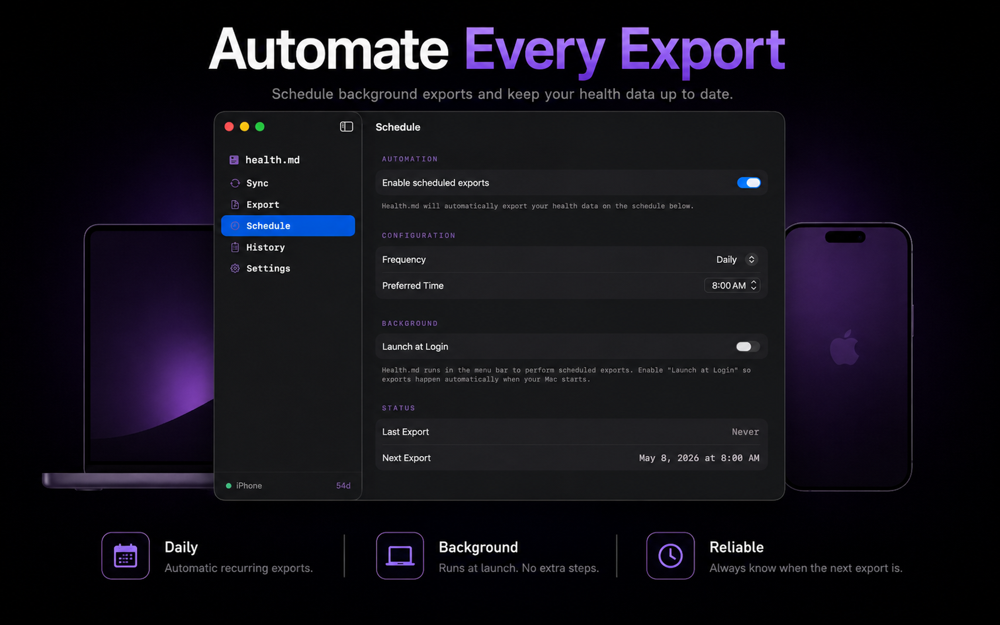
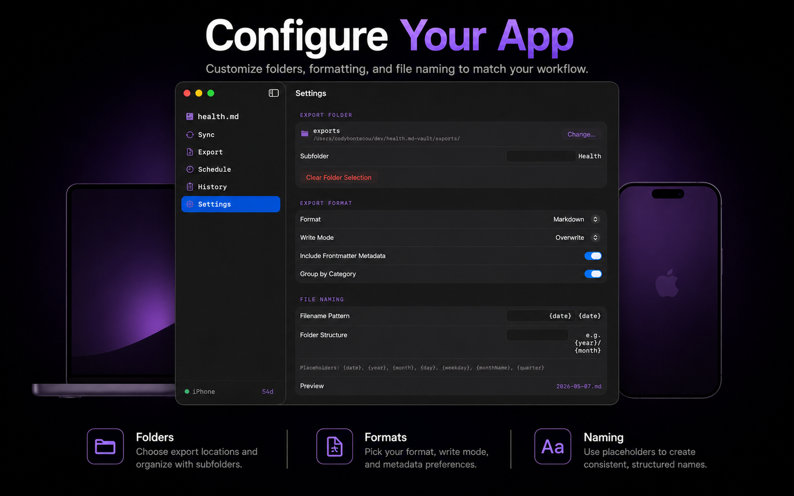

Integrations · Desktop
macOS App
Native Mac companion for receiving iPhone-configured exports, writing files to desktop folders, checking readiness, reviewing history, and staying available from the menu bar.
The Mac app is a local destination and desktop control surface. Apple Health remains on iPhone; the Mac receives export jobs from the iPhone and writes the resulting Markdown, JSON, CSV, or Obsidian Bases files to the destination folder you choose.
Panes




Setup
- Install and open Health.md on Mac.
- Pick a destination folder in iCloud Drive, local disk, or an Obsidian vault.
- On iPhone, enable Mac connectivity from the Sync tab.
- On iPhone, choose Connected Mac in the Export tab and configure the export.
- Tap Export. The iPhone reads HealthKit and the Mac writes the received files.
HealthKit limitation.
The Mac app does not read Apple Health directly. Use the iPhone app as the HealthKit source and the Mac app as the local destination.